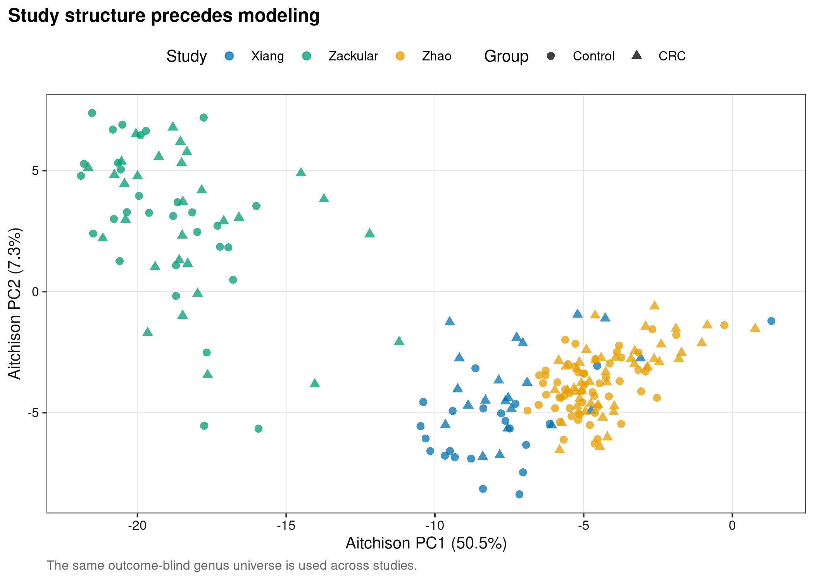
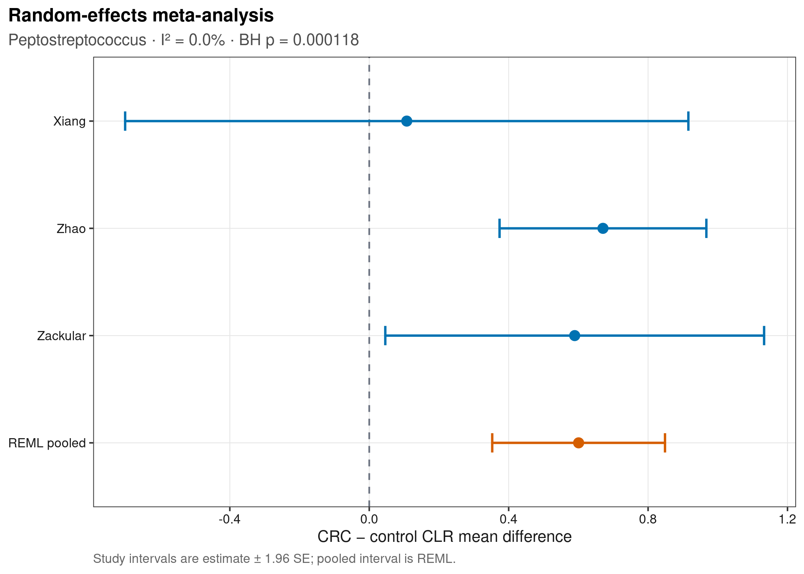
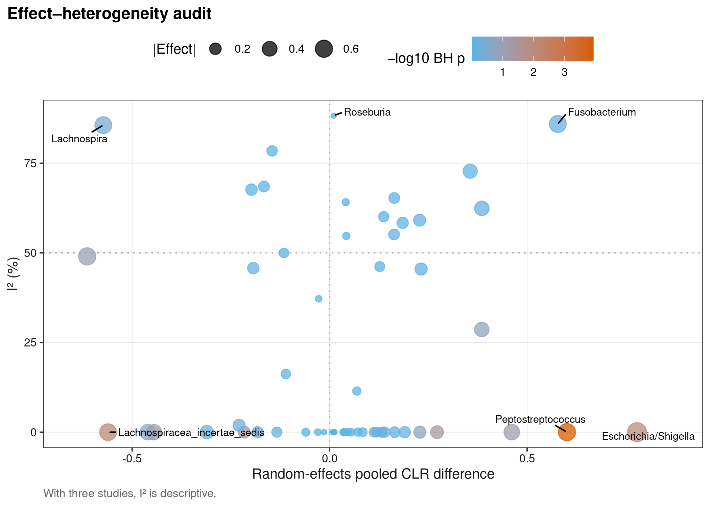
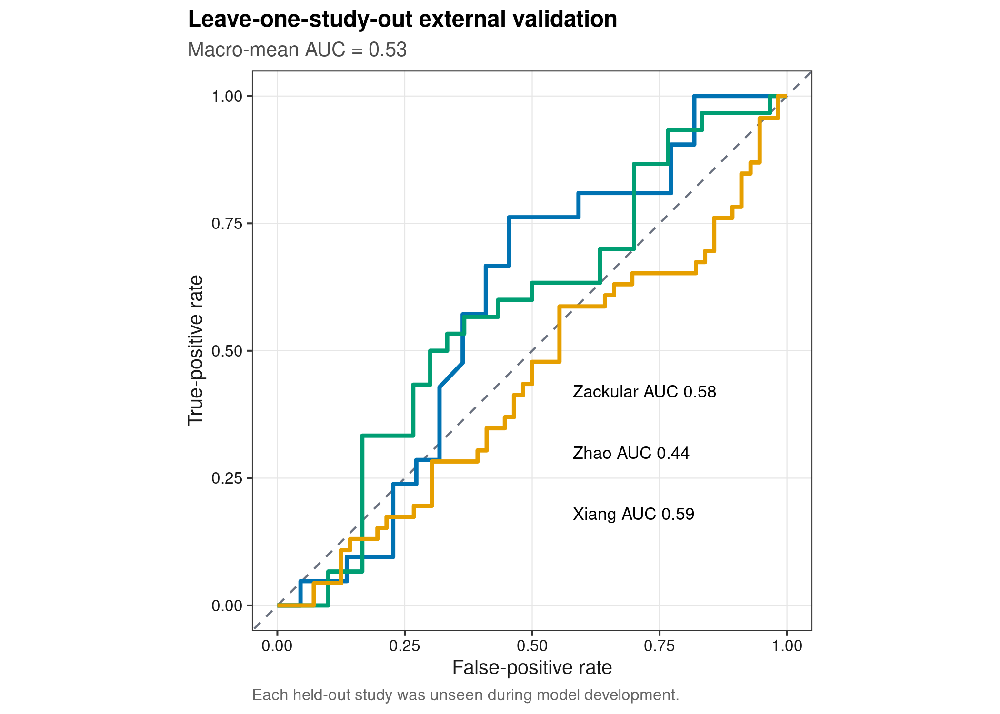

options(timeout = 600)
data_url <- "https://raw.githubusercontent.com/petemeng/microbiome-best-practices/3cb6a817e0c73ab7ecbec1cedc1ad80cbb9ecfaa/"
input_files <- c(
"data/small/cross-cohort-crc/crc_xiang/metadata.tsv",
"data/small/cross-cohort-crc/crc_xiang/otutab.tsv",
"data/small/cross-cohort-crc/crc_xiang/taxonomy.tsv",
"data/small/cross-cohort-crc/crc_zackular/metadata.tsv",
"data/small/cross-cohort-crc/crc_zackular/otutab.tsv",
"data/small/cross-cohort-crc/crc_zackular/taxonomy.tsv",
"data/small/cross-cohort-crc/crc_zhao/metadata.tsv",
"data/small/cross-cohort-crc/crc_zhao/otutab.tsv",
"data/small/cross-cohort-crc/crc_zhao/taxonomy.tsv",
"data/small/cross-cohort-crc/source-summary.json"
)
for (path in input_files) {
dir.create(dirname(path), recursive = TRUE, showWarnings = FALSE)
if (!file.exists(path)) download.file(paste0(data_url, path), path, mode = "wb", quiet = TRUE)
}跨队列 meta 分析与外部验证
跨队列验证必须把异质性作为结果
Duvallet et al. (2017)用统一处理的公开研究区分 disease-specific 与跨疾病 microbial signatures；Wirbel et al. (2019)展示 CRC shotgun cohorts 的跨研究 meta-analysis 与 external classification。
重要先给结论
把所有样本合并后随机切 train/test，主要检验“能否识别混合数据中的同分布样本”，不是“能否迁移到新研究”。跨队列证据应保留 study boundary：每个队列独立估计 effect，再做 random-effects meta；预测时把整个从未参与 preprocessing 与 tuning 的 cohort 留作外部 test。
数据来自 MicrobiomeHD Zenodo record 10.5281/zenodo.1146764 的 standardized 16S outputs，许可为 CC BY-NC 4.0。本页仅保留 CRC 与 healthy controls；Zackular cohort 的 adenoma 与 mock samples 在分析前排除。三项研究的 amplicon region、platform、geography 与 preprocessing lineage 不完全相同，这正是需要 study-level validation 的原因。
同名属是否意味着跨研究测到了同一个量？
不同扩增区域和数据库可能把相同属名映射到不同的可检测成员；在一个队列未出现的属，也可能是不可测或未注释，不能总当作生物学零。合并之前要保留各队列的测量范围。CLR 效应只有在参照集合与变换定义可比较时才具有共同尺度，不能仅凭列名相同就进行 meta 分析。
本例只有三个研究，随机效应模型对研究间方差的估计本来就有限。低 I² 不证明不存在异质性，高 I² 也不说明平均效应毫无价值；应结合各研究效应区间、方向和留一研究结果。如果拿掉一个研究就改变主要方向，结论应降为研究依赖的关联。外部分类成功回答可迁移预测问题，不能反过来证明 meta 分析中的某个菌具有因果作用。
下载并读取本次分析的数据
需要 R，以及 ggplot2、ggrepel、metafor、pROC、ragg、ranger、readr、svglite。本次使用三个公开结直肠癌队列各自的 count、taxonomy 和 metadata 表；队列身份不能在合并时丢失。
在一个新建的文件夹中运行以下代码，下载文件后按文中的顺序继续分析：
library(ggplot2)
library(metafor)
set.seed(20260744)
font_pub <- "sans"
pal_pub <- c(
blue = "#0072B2", orange = "#E69F00", green = "#009E73",
vermillion = "#D55E00", purple = "#CC79A7", sky = "#56B4E9",
yellow = "#F0E442", grey = "#6B7280"
)
scale_color_pub <- function(..., values = unname(pal_pub)) ggplot2::scale_color_manual(..., values = values)
scale_fill_pub <- function(..., values = unname(pal_pub)) ggplot2::scale_fill_manual(..., values = values)
theme_pub <- function(base_size = 10, base_family = font_pub) {
ggplot2::theme_bw(base_size = base_size, base_family = base_family) +
ggplot2::theme(
panel.grid.minor = ggplot2::element_blank(),
panel.grid.major = ggplot2::element_line(colour = "#E6E6E6", linewidth = 0.25),
axis.text = ggplot2::element_text(colour = "#1A1A1A"),
axis.title = ggplot2::element_text(colour = "#1A1A1A"),
plot.title.position = "plot",
plot.title = ggplot2::element_text(face = "bold", size = ggplot2::rel(1.15)),
plot.subtitle = ggplot2::element_text(colour = "#4D4D4D"),
plot.caption = ggplot2::element_text(colour = "#666666", hjust = 0),
strip.background = ggplot2::element_rect(fill = "#F2F2F2", colour = "#B3B3B3"),
strip.text = ggplot2::element_text(face = "bold"),
legend.key = ggplot2::element_blank(), legend.position = "top"
)
}
save_pub <- function(plot, file_base, width = 89, height = 70, units = "mm", dpi = 600) {
dir.create(dirname(file_base), recursive = TRUE, showWarnings = FALSE)
ggplot2::ggsave(paste0(file_base, ".pdf"), plot, width = width, height = height,
units = units, device = grDevices::cairo_pdf, family = font_pub, bg = "white")
ggplot2::ggsave(paste0(file_base, ".svg"), plot, width = width, height = height,
units = units, device = svglite::svglite, bg = "white")
ggplot2::ggsave(paste0(file_base, ".png"), plot, width = width, height = height,
units = units, dpi = dpi, device = ragg::agg_png, bg = "white")
ggplot2::ggsave(paste0(file_base, ".tiff"), plot, width = width, height = height,
units = units, dpi = dpi, device = ragg::agg_tiff,
compression = "lzw", bg = "white")
invisible(plot)
}每个队列独立读取三件套，再聚合到 genus
read_keyed_tsv <- function(path) {
x <- readr::read_tsv(path, show_col_types = FALSE, progress = FALSE,
name_repair = "minimal", na = character())
ids <- as.character(x[[1L]])
stopifnot(!anyDuplicated(ids))
out <- as.data.frame(x[-1L], check.names = FALSE)
rownames(out) <- ids
out
}
clean_genus <- function(x) {
x <- sub("^[A-Za-z]__", "", trimws(as.character(x)))
x[is.na(x) | x == "" | grepl("unknown|unclassified|uncultured|metagenome", x,
ignore.case = TRUE)] <- NA_character_
x
}
read_study <- function(study) {
directory <- file.path("data/small/cross-cohort-crc", study)
raw <- read_keyed_tsv(file.path(directory, "otutab.tsv"))
taxonomy <- read_keyed_tsv(file.path(directory, "taxonomy.tsv"))
metadata <- read_keyed_tsv(file.path(directory, "metadata.tsv"))
counts <- as.matrix(data.frame(lapply(raw, as.integer), check.names = FALSE))
rownames(counts) <- rownames(raw)
counts <- counts[, rownames(metadata), drop = FALSE]
genus <- clean_genus(taxonomy[rownames(counts), "Genus"])
keep <- !is.na(genus) & rowSums(counts) > 0
genus_counts <- rowsum(counts[keep, , drop = FALSE], group = genus[keep], reorder = TRUE)
metadata$Group <- factor(metadata$Group, levels = c("Control", "CRC"))
list(counts = genus_counts, metadata = metadata, taxonomy = taxonomy)
}
study_names <- c("crc_xiang", "crc_zhao", "crc_zackular")
studies <- setNames(lapply(study_names, read_study), study_names)
study_label <- c(crc_xiang = "Xiang", crc_zhao = "Zhao", crc_zackular = "Zackular")
dimension_ledger <- do.call(rbind, lapply(study_names, function(study) {
data.frame(
Study = study_label[[study]], Genera = nrow(studies[[study]]$counts),
Samples = ncol(studies[[study]]$counts), ReadsAssignedToGenus = sum(studies[[study]]$counts),
Controls = sum(studies[[study]]$metadata$Group == "Control"),
CRC = sum(studies[[study]]$metadata$Group == "CRC")
)
}))
stopifnot(
identical(dimension_ledger$Samples, c(43L, 102L, 60L)),
identical(dimension_ledger$Controls, c(22L, 56L, 30L)),
identical(dimension_ledger$CRC, c(21L, 46L, 30L))
)
dimension_ledger Study Genera Samples ReadsAssignedToGenus Controls CRC
1 Xiang 110 43 45314 22 21
2 Zhao 78 102 17794 56 46
3 Zackular 215 60 3388827 30 30下载完整 R 脚本。脚本包含数据下载、计算和图形导出。
首次使用时安装 R 包
install.packages(c(
"ggplot2", "ggrepel", "metafor", "patchwork", "pROC", "ragg",
"ranger", "readr", "scales", "svglite", "systemfonts", "vegan"
))队列异质性不是需要隐藏的噪声
先在每个研究中估计可比较的效应量与不确定性
对 genus \(g\)，在每个 study 内对 pseudocount-0.5 CLR abundance 拟合
\[ z_{gs}=\beta_{0g}+\beta_{1g}I(\mathrm{CRC})+\epsilon_{gs}. \]
\(\hat\beta_{1g}\) 是 CRC–control 的 within-study mean difference，标准误由该 study 的 biological samples 决定。不同 studies 不共享 sample-level residual variance，也不先用一个 batch coefficient“抹平”。
random-effects meta 允许真效应跨研究变化
\[ \hat\theta_j\sim N(\theta_j, s_j^2),\qquad \theta_j\sim N(\mu,\tau^2). \]
REML 估计 between-study variance \(\tau^2\)；\(I^2\) 描述观测差异中归因于 heterogeneity 的比例。只有 2–3 个 studies 时，\(I^2\) 很不稳定，因此同时展示每项研究的方向、CI 与 leave-one-study-out sensitivity，不把一个阈值当真理。
外部验证队列不能参与特征选择或调参
留出 Zackular 时，Xiang+Zhao 才是 training universe。shared genera、prevalence/variance filter、CLR basis、hyperparameters 都只能由这两个 studies 确定；Zackular 只在模型锁定后映射缺失 features、计算 CLR 并预测一次。
pooled probability 不一定可直接合并
三个 held-out cohorts 来自三个不同模型，class prevalence 与 calibration 不同。本文按 cohort 报 AUC，并给 macro mean；不把三组 probability 拼起来制造一个“总 AUC”。若目标是部署 probability，还需目标人群 prevalence 下的 recalibration 与 decision-curve analysis。
深入：何时才考虑 harmonization
MMUPHin、ConQuR 等方法可用于 association meta-analysis 或 abundance harmonization，但它们不能把不可识别的 study–phenotype confounding 变成可识别。任何 data-driven correction 都必须在 training studies 内拟合，再冻结后应用到 external test；若某 study 全是病例、另一 study 全是对照，study 与 disease 完全混杂，算法无法恢复 disease effect。
保留队列差异，再做合并估计和外部验证
不查看结局标签，先确定可合并分析的属
eligible_by_study <- lapply(studies, function(study) {
rownames(study$counts)[rowMeans(study$counts > 0) >= 0.10 & rowSums(study$counts) >= 20]
})
eligibility_count <- table(unlist(eligible_by_study))
meta_genera <- names(eligibility_count)[eligibility_count >= 2L]
stopifnot(length(meta_genera) >= 20L)
align_counts <- function(counts, features) {
aligned <- matrix(0L, nrow = length(features), ncol = ncol(counts),
dimnames = list(features, colnames(counts)))
common <- intersect(features, rownames(counts))
aligned[common, ] <- counts[common, , drop = FALSE]
aligned
}
clr_transform <- function(counts, pseudocount = 0.5) {
logged <- log(counts + pseudocount)
sweep(logged, 2L, colMeans(logged), "-")
}
study_clr <- lapply(studies, function(study) clr_transform(align_counts(study$counts, meta_genera)))先估计各研究的效应，再进行随机效应汇总分析
study_effects <- do.call(rbind, lapply(study_names, function(study) {
group <- studies[[study]]$metadata$Group
do.call(rbind, lapply(meta_genera, function(genus) {
fit <- stats::lm(study_clr[[study]][genus, ] ~ group)
coefficient <- summary(fit)$coefficients["groupCRC", ]
data.frame(
Study = study_label[[study]], Genus = genus,
Effect = unname(coefficient["Estimate"]), SE = unname(coefficient["Std. Error"]),
PValue = unname(coefficient["Pr(>|t|)"]), stringsAsFactors = FALSE
)
}))
}))
meta_one_genus <- function(genus) {
x <- study_effects[study_effects$Genus == genus & is.finite(study_effects$SE) & study_effects$SE > 0, ]
fit <- metafor::rma.uni(yi = x$Effect, sei = x$SE, method = "REML")
data.frame(
Genus = genus, Studies = fit$k, PooledEffect = as.numeric(fit$b),
SE = fit$se, CILower = fit$ci.lb, CIUpper = fit$ci.ub, PValue = fit$pval,
Tau2 = fit$tau2, I2 = fit$I2, DirectionAgreement = abs(sum(sign(x$Effect))) / nrow(x),
stringsAsFactors = FALSE
)
}
meta_results <- do.call(rbind, lapply(meta_genera, meta_one_genus))
meta_results$AdjustedP <- stats::p.adjust(meta_results$PValue, method = "BH")
meta_results <- meta_results[order(meta_results$AdjustedP, -abs(meta_results$PooledEffect)), ]
stopifnot(nrow(meta_results) == length(meta_genera), all(meta_results$I2 >= 0 & meta_results$I2 <= 100))
head(meta_results, 12) Genus Studies PooledEffect SE CILower
46 Peptostreptococcus 3 0.6007024 0.12645948 0.35284637
25 Escherichia/Shigella 3 0.7781053 0.21863675 0.34958519
36 Lachnospiracea_incertae_sedis 3 -0.5609380 0.16047748 -0.87546811
30 Gemella 3 0.2719191 0.09303378 0.08957625
52 Ruminococcus 3 -0.2163520 0.07437589 -0.36212610
37 Lactobacillus 3 0.4611324 0.17384632 0.12039989
15 Clostridium_XVIII 3 -0.4447280 0.16991477 -0.77775483
5 Bacteroides 3 -0.6137649 0.25332344 -1.11026974
27 Faecalibacterium 3 -0.4604468 0.20559960 -0.86341464
22 Enterobacter 3 0.3850164 0.17715688 0.03779534
56 Turicibacter 3 0.2284716 0.11046061 0.01197275
35 Lachnospira 3 -0.5728884 0.33693745 -1.23327369
CIUpper PValue Tau2 I2 DirectionAgreement
46 0.84855841 2.032586e-06 1.267228e-06 0.001825964 1
25 1.20662551 3.724177e-04 0.000000e+00 0.000000000 1
36 -0.24640795 4.732959e-04 0.000000e+00 0.000000000 1
30 0.45426195 3.468995e-03 0.000000e+00 0.000000000 1
52 -0.07057799 3.627023e-03 0.000000e+00 0.000000000 1
37 0.80186492 7.989125e-03 0.000000e+00 0.000000000 1
15 -0.11170117 8.861301e-03 0.000000e+00 0.000000000 1
5 -0.11726011 1.539924e-02 9.339558e-02 49.019246174 1
27 -0.05747900 2.512134e-02 0.000000e+00 0.000000000 1
22 0.73223754 2.975715e-02 3.148348e-02 28.620143486 1
56 0.44497038 3.860681e-02 0.000000e+00 0.000000000 1
35 0.08749683 8.907803e-02 2.740343e-01 85.604679770 1
AdjustedP
46 0.000117890
25 0.009150388
36 0.009150388
30 0.042073468
52 0.042073468
37 0.073422209
15 0.073422209
5 0.111644522
27 0.161893105
22 0.172591485
56 0.203563180
35 0.430543807leave-one-study-out external classification
auc_score <- function(truth, probability) {
as.numeric(pROC::auc(truth, probability, levels = c("Control", "CRC"),
direction = "<", quiet = TRUE))
}
select_training_features <- function(training_studies, max_features = 80L) {
eligible <- lapply(training_studies, function(study) {
rownames(study$counts)[rowMeans(study$counts > 0) >= 0.10 & rowSums(study$counts) >= 20]
})
shared <- Reduce(intersect, eligible)
combined <- do.call(cbind, lapply(training_studies, function(study) align_counts(study$counts, shared)))
transformed <- t(clr_transform(combined))
variance <- apply(transformed, 2L, stats::var)
names(head(sort(variance, decreasing = TRUE), max_features))
}
prepare_model_matrix <- function(study, features) {
t(clr_transform(align_counts(study$counts, features)))
}
grid <- expand.grid(MtryFraction = c(0.10, 0.30, 0.60), MinNodeSize = c(3L, 10L))
external_predictions <- list()
tuning_results <- list()
for (held_out in study_names) {
training_names <- setdiff(study_names, held_out)
inner_score <- numeric(nrow(grid))
for (grid_id in seq_len(nrow(grid))) {
direction_auc <- numeric(length(training_names))
for (inner_id in seq_along(training_names)) {
inner_valid <- training_names[inner_id]
inner_train <- setdiff(training_names, inner_valid)
features <- select_training_features(studies[inner_train])
x_train <- do.call(rbind, lapply(studies[inner_train], prepare_model_matrix, features = features))
y_train <- factor(unlist(lapply(studies[inner_train], function(x) as.character(x$metadata$Group))),
levels = c("Control", "CRC"))
x_valid <- prepare_model_matrix(studies[[inner_valid]], features)
y_valid <- studies[[inner_valid]]$metadata$Group
fit <- ranger::ranger(
x = x_train, y = y_train, probability = TRUE, num.trees = 500L,
mtry = max(1L, round(grid$MtryFraction[grid_id] * ncol(x_train))),
min.node.size = grid$MinNodeSize[grid_id], importance = "none",
seed = 20260744 + 1000 * match(held_out, study_names) + 100 * grid_id + inner_id,
num.threads = 1L
)
direction_auc[inner_id] <- auc_score(y_valid, predict(fit, data = x_valid)$predictions[, "CRC"])
}
inner_score[grid_id] <- mean(direction_auc)
tuning_results[[length(tuning_results) + 1L]] <- data.frame(
HeldOut = held_out, MtryFraction = grid$MtryFraction[grid_id],
MinNodeSize = grid$MinNodeSize[grid_id], MeanTrainingStudyAUC = inner_score[grid_id]
)
}
best_id <- which.max(inner_score)
features <- select_training_features(studies[training_names])
x_train <- do.call(rbind, lapply(studies[training_names], prepare_model_matrix, features = features))
y_train <- factor(unlist(lapply(studies[training_names], function(x) as.character(x$metadata$Group))),
levels = c("Control", "CRC"))
x_test <- prepare_model_matrix(studies[[held_out]], features)
y_test <- studies[[held_out]]$metadata$Group
fit <- ranger::ranger(
x = x_train, y = y_train, probability = TRUE, num.trees = 1500L,
mtry = max(1L, round(grid$MtryFraction[best_id] * ncol(x_train))),
min.node.size = grid$MinNodeSize[best_id], importance = "permutation",
seed = 20260744 + 100000 * match(held_out, study_names), num.threads = 1L
)
external_predictions[[held_out]] <- data.frame(
SampleID = rownames(x_test), HeldOutStudy = study_label[[held_out]],
Truth = as.character(y_test), ProbabilityCRC = predict(fit, data = x_test)$predictions[, "CRC"],
TrainingStudies = paste(study_label[training_names], collapse = " + "),
Features = length(features), stringsAsFactors = FALSE
)
}
external_predictions <- do.call(rbind, external_predictions)
tuning_results <- do.call(rbind, tuning_results)
external_performance <- do.call(rbind, lapply(unique(external_predictions$HeldOutStudy), function(study) {
x <- external_predictions[external_predictions$HeldOutStudy == study, ]
data.frame(HeldOutStudy = study, Samples = nrow(x), AUC = auc_score(
factor(x$Truth, levels = c("Control", "CRC")), x$ProbabilityCRC
), Brier = mean((as.numeric(x$Truth == "CRC") - x$ProbabilityCRC)^2))
}))
external_performance$MacroMeanAUC <- mean(external_performance$AUC)
stopifnot(nrow(external_predictions) == 205L, nrow(external_performance) == 3L)
external_performance HeldOutStudy Samples AUC Brier MacroMeanAUC
1 Xiang 43 0.5876623 0.2485894 0.5339252
2 Zhao 102 0.4363354 0.2751782 0.5339252
3 Zackular 60 0.5777778 0.2496731 0.5339252异质性、留一队列与外部验证
- forest plot 先看每个 study。pooled estimate 不能遮住方向相反、CI 很宽或单一研究支配权重的情况。
- meta-analysis 的单位是 study。不能把 205 个 samples 当 205 个独立 studies；三个研究对 heterogeneity 的估计仍很粗。
- study-level external split 优于 random split。若有 10 个中心，就做 leave-one-center-out 或预注册 discovery/validation split；同中心随机拆分只给内部性能。
- harmonization 进入 pipeline。MMUPHin、ConQuR、ComBat 等若使用，必须在 training domain 拟合；external test 不得参与 batch parameter estimation。
- 平台差异可能改变 feature meaning。不同 16S regions 与 classifiers 对同名 genus 的 resolution 不同；关键 marker 应回查 full lineage、primer coverage 与 shotgun concordance。
注记小研究数下如何写 heterogeneity
只有三个 cohorts 时，不要把 I² < 50% 写成“无异质性”。更稳妥的表述是：列出三个 study effects、REML pooled estimate、tau²/I²、direction agreement 和 leave-one-study-out结果，并把新增独立 cohort 作为下一步验证。
同时报告平均效应、异质性与外部表现
study separation
ordination_genera <- meta_genera
combined_clr <- do.call(cbind, lapply(study_names, function(study) {
clr_transform(align_counts(studies[[study]]$counts, ordination_genera))
}))
pca <- stats::prcomp(t(combined_clr), center = FALSE, scale. = FALSE)
variance <- 100 * pca$sdev^2 / sum(pca$sdev^2)
ordination <- data.frame(
SampleID = rownames(pca$x), PC1 = pca$x[, 1], PC2 = pca$x[, 2],
Study = rep(study_label[study_names], times = vapply(studies, function(x) ncol(x$counts), integer(1))),
Group = unlist(lapply(studies, function(x) as.character(x$metadata$Group))),
stringsAsFactors = FALSE
)
p_pcoa <- ggplot(ordination, aes(PC1, PC2, colour = Study, shape = Group)) +
geom_point(alpha = 0.75, size = 2) +
scale_color_pub(values = c(Xiang = pal_pub[["blue"]], Zhao = pal_pub[["orange"]], Zackular = pal_pub[["green"]])) +
labs(title = "Study structure precedes modeling",
x = sprintf("Aitchison PC1 (%.1f%%)", variance[1]),
y = sprintf("Aitchison PC2 (%.1f%%)", variance[2]),
caption = "The same outcome-blind genus universe is used across studies.") + theme_pub()
save_pub(p_pcoa, "figures/44-cohort-pcoa", 115, 95)
p_pcoa
用代表性属的森林图比较各研究结果
forest_genus <- meta_results$Genus[1]
forest_data <- study_effects[study_effects$Genus == forest_genus, ]
forest_data$CILower <- forest_data$Effect - 1.96 * forest_data$SE
forest_data$CIUpper <- forest_data$Effect + 1.96 * forest_data$SE
pooled_row <- meta_results[meta_results$Genus == forest_genus, ]
forest_plot_data <- rbind(
data.frame(Label = forest_data$Study, Effect = forest_data$Effect,
CILower = forest_data$CILower, CIUpper = forest_data$CIUpper, Type = "Study"),
data.frame(Label = "REML pooled", Effect = pooled_row$PooledEffect,
CILower = pooled_row$CILower, CIUpper = pooled_row$CIUpper, Type = "Pooled")
)
forest_plot_data$Label <- factor(forest_plot_data$Label, levels = rev(forest_plot_data$Label))
p_forest <- ggplot(forest_plot_data, aes(Effect, Label, colour = Type)) +
geom_vline(xintercept = 0, linetype = 2, colour = pal_pub[["grey"]]) +
geom_errorbarh(aes(xmin = CILower, xmax = CIUpper), height = 0.18, linewidth = 0.7) +
geom_point(size = 2.6) +
scale_color_pub(values = c(Study = pal_pub[["blue"]], Pooled = pal_pub[["vermillion"]])) +
labs(title = "Random-effects meta-analysis",
subtitle = sprintf("%s · I² = %.1f%% · BH p = %.3g", forest_genus, pooled_row$I2, pooled_row$AdjustedP),
x = "CRC − control CLR mean difference", y = NULL,
caption = "Study intervals are estimate ± 1.96 SE; pooled interval is REML.") +
theme_pub() + theme(legend.position = "none")
save_pub(p_forest, "figures/44-meta-forest", 115, 82)
p_forest
同时报告合并效应与研究间异质性
label_meta <- unique(rbind(
head(meta_results[order(meta_results$AdjustedP, -abs(meta_results$PooledEffect)), ], 3),
head(meta_results[order(-meta_results$I2, na.last = TRUE), ], 3)
))
p_heterogeneity <- ggplot(meta_results, aes(PooledEffect, I2)) +
geom_hline(yintercept = 50, linetype = 3, colour = "#B3B3B3") +
geom_vline(xintercept = 0, linetype = 3, colour = "#B3B3B3") +
geom_point(aes(colour = -log10(pmax(AdjustedP, 1e-12)), size = abs(PooledEffect)), alpha = 0.75) +
ggrepel::geom_text_repel(data = label_meta, aes(label = Genus), size = 2.6,
max.overlaps = Inf, min.segment.length = 0,
box.padding = 0.4) +
scale_colour_gradient(low = pal_pub[["sky"]], high = pal_pub[["vermillion"]]) +
scale_x_continuous(expand = expansion(mult = c(0.08, 0.12))) +
labs(title = "Effect–heterogeneity audit", x = "Random-effects pooled CLR difference",
y = "I² (%)", colour = "−log10 BH p", size = "|Effect|",
caption = "With three studies, I² is descriptive.") +
theme_pub()
save_pub(p_heterogeneity, "figures/44-heterogeneity", 135, 100)
p_heterogeneity
整队列外部验证 ROC
external_roc <- do.call(rbind, lapply(unique(external_predictions$HeldOutStudy), function(study) {
x <- external_predictions[external_predictions$HeldOutStudy == study, ]
roc <- pROC::roc(factor(x$Truth, levels = c("Control", "CRC")), x$ProbabilityCRC,
levels = c("Control", "CRC"), direction = "<", quiet = TRUE)
data.frame(HeldOutStudy = study, FalsePositiveRate = 1 - roc$specificities,
TruePositiveRate = roc$sensitivities)
}))
auc_labels <- merge(external_performance, data.frame(
HeldOutStudy = unique(external_predictions$HeldOutStudy), x = 0.58, y = c(0.18, 0.30, 0.42)
), by = "HeldOutStudy")
p_external <- ggplot(external_roc, aes(FalsePositiveRate, TruePositiveRate, colour = HeldOutStudy)) +
geom_abline(slope = 1, intercept = 0, linetype = 2, colour = pal_pub[["grey"]]) +
geom_path(linewidth = 1) +
geom_text(data = auc_labels, aes(x, y, label = sprintf("%s AUC %.2f", HeldOutStudy, AUC)),
inherit.aes = FALSE, hjust = 0, size = 3) +
scale_color_pub(values = c(Xiang = pal_pub[["blue"]], Zhao = pal_pub[["orange"]], Zackular = pal_pub[["green"]])) +
coord_equal() +
labs(title = "Leave-one-study-out external validation",
subtitle = sprintf("Macro-mean AUC = %.2f", mean(external_performance$AUC)),
x = "False-positive rate", y = "True-positive rate",
caption = "Each held-out study was unseen during model development.") +
theme_pub() + theme(legend.position = "none")
save_pub(p_external, "figures/44-external-validation", 110, 100)
p_external
dir.create("results/44-cross-cohort-validation", recursive = TRUE, showWarnings = FALSE)
readr::write_tsv(dimension_ledger, "results/44-cross-cohort-validation/cohort-dimensions.tsv")
readr::write_tsv(study_effects, "results/44-cross-cohort-validation/study-genus-effects.tsv")
readr::write_tsv(meta_results, "results/44-cross-cohort-validation/random-effects-meta.tsv")
readr::write_tsv(external_predictions, "results/44-cross-cohort-validation/external-predictions.tsv")
readr::write_tsv(external_performance, "results/44-cross-cohort-validation/external-performance.tsv")
readr::write_tsv(tuning_results, "results/44-cross-cohort-validation/training-study-tuning.tsv")常见坑
注意跨队列分析最常见的六个伪验证
- 先合并全部 studies，再随机拆分 train/test，并称作 external validation。
- 用全数据选择 shared taxa、batch correction 参数或 hyperparameters，之后才留出 cohort。
- 把 study 当普通 covariate，却存在某 study 只有病例或只有对照的完全混杂。
- 只展示 pooled effect，不展示各 study direction、CI、tau²/I² 与 leave-one-out。
- 把三个不同模型的 probabilities 直接拼成一个 pooled AUC，而不审 calibration。
- 将 16S region/平台造成的同名 genus resolution 差异解释为生物学 heterogeneity。
报告跨队列合并与外部验证的方法与限制
Three independently processed CRC 16S cohorts from MicrobiomeHD (Xiang, Zhao, and Zackular) were analyzed without pooling sample-level residuals. Features were aggregated to named genera, and the meta-analysis universe comprised genera with ≥10% prevalence and ≥20 reads in at least two cohorts. Within each cohort, pseudocount-0.5 CLR abundance was regressed on CRC status to obtain the CRC-minus-control estimate and standard error. Genus-specific effects were combined using REML random-effects models; Benjamini–Hochberg correction covered the complete genus universe, and tau², I², study directions, and confidence intervals were retained. Predictive transportability was assessed by leave-one-study-out validation. Shared-feature filtering, variance ranking, CLR basis, and random-forest tuning were derived exclusively from the two training studies; tuning used reciprocal study-level validation, and the held-out cohort was predicted once after model locking. AUC and Brier score were reported separately for each external cohort, with macro-mean AUC used only as a summary.
将跨队列合并与外部验证用于自己的研究
每个 cohort 都要保留自己的三件套目录，并在 metadata 中提供统一英文 outcome：
study_names <- c("study_a", "study_b", "study_c")
studies <- setNames(lapply(study_names, read_study), study_names)
# metadata$Group 必须统一为 factor(c("Control", "Case"))先建立 study ledger：地区、纳排标准、样本保存、DNA extraction、16S region、primers、platform、taxonomy database 与 case/control 数。只有一个队列时可以做 nested CV，但不能把随机 test fold 写成“跨队列验证”；至少准备一个在 protocol、time 或 center 上真正独立的数据集。
参考
- Duvallet C, Gibbons SM, Gurry T, Irizarry RA, Alm EJ. Meta-analysis of gut microbiome studies identifies disease-specific and shared responses. Nature Communications. 2017;8:1784. https://doi.org/10.1038/s41467-017-01973-8
- Wirbel J, Pyl PT, Kartal E, et al. Meta-analysis of fecal metagenomes reveals global microbial signatures that are specific for colorectal cancer. Nature Medicine. 2019;25:679–689. https://doi.org/10.1038/s41591-019-0406-6
- Xiang J, Li Q, Mei Q, et al. Microflora in human colorectal cancer. PLoS ONE. 2012;7:e39743. https://doi.org/10.1371/journal.pone.0039743
- Wang T, Cai G, Qiu Y, et al. Structural segregation of gut microbiota between colorectal cancer patients and healthy volunteers. ISME Journal. 2012;6:320–329. https://doi.org/10.1038/ismej.2011.109
- Zackular JP, Rogers MAM, Ruffin MT IV, Schloss PD. The human gut microbiome as a screening tool for colorectal cancer. Cancer Prevention Research. 2014;7:1112–1121. https://doi.org/10.1158/1940-6207.CAPR-14-0129